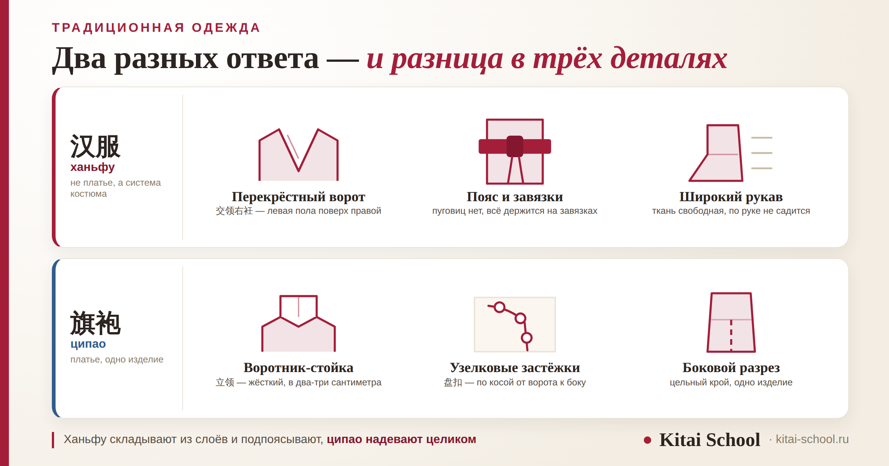
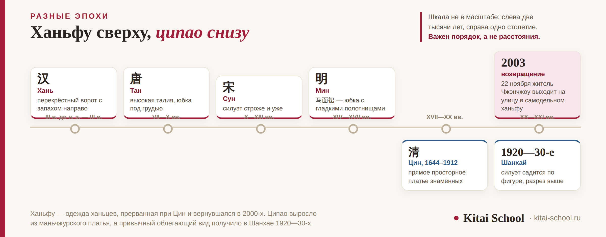

Культура Китая
Как называется традиционное китайское платье: ципао, ханьфу и чем они различаются


У вопроса «как называется традиционное китайское платье» два ответа, и они не взаимозаменяемы. Облегающее платье с воротником-стойкой — это ципао 旗袍 (qípáo). Многослойный костюм с запашным воротом, широкими рукавами и поясом — ханьфу 汉服 (hànfú), и это вообще не платье, а система костюма. Разберём происхождение обоих, их детали и то, где их носят сегодня — от свадеб до фестивалей.
Ципао — одно изделие цельного кроя, по происхождению маньчжурское; привычный облегающий вид оно получило в Шанхае 1920—30-х, то есть ему нет и ста лет. Ханьфу — не наряд, а семейство фасонов ханьской одежды с общим признаком: перекрёстный ворот, левая пола поверх правой, застёжка завязками. Ханьфу вернулось на улицы в 2000-х: отсчёт ведут от 22 ноября 2003 года. Третье название, 唐装, путает сильнее всего — к эпохе Тан оно отношения не имеет.
Короткий ответ: два названия и почему их два
Если вы видели платье в кино или на витрине сувенирной лавки — прилегающее, с жёстким воротником-стойкой, косой застёжкой и разрезами по бокам, — это ципао. Если видели костюм из нескольких слоёв, с запахом на груди, широкими рукавами и поясом, — это ханьфу.
| Название | Чтение | Что это | Откуда |
|---|---|---|---|
| 旗袍 ципао | qípáo | платье, одно изделие | маньчжурская линия, Цин |
| 汉服 ханьфу | hànfú | система костюма из нескольких предметов | ханьская линия, от древности до Мин |
| 唐装 танчжуан | tángzhuāng | куртка на застёжках | вопреки названию — не эпоха Тан |
Разница не в фасоне, а в уровне понятия. Ципао — это вещь, её можно сшить, померить и купить. Ханьфу — это семейство: внутри него свои фасоны по эпохам, и спрашивать «как выглядит ханьфу» примерно то же самое, что спрашивать, как выглядит европейский костюм.
Практический вывод: называть ханьфу «китайским платьем» не стоит — вас поймут, но поправят. А ципао платьем называть можно и нужно.
Ципао: платье, которое моложе, чем кажется
Название разбирается по знакам: 旗 (qí) — «знамя», 袍 (páo) — «халат». Платье знамённых. Знамёнными называли людей, записанных в маньчжурскую военно-административную систему Восьми знамён, на которой держалась империя Цин (1644—1912).
Исходное платье знамённых выглядело не так, как сегодняшнее: прямой просторный халат, скрывающий фигуру, с разрезами для удобства в седле и в ходьбе. Никакой подчёркнутой талии в нём не было.
Перемена случилась в Шанхае 1920—30-х годов. Город был одним из самых космополитичных в мире, западная мода входила в обиход, и платье перекроили: появилась талия, разрез поднялся выше, рукав укоротился. Именно этот силуэт сегодня и называют ципао, а носили его актрисы, студентки и городские жительницы.
Отсюда главное, что стоит запомнить: «древним» ципао не является. Знамённый халат — да, цинский. Но платье, которое вы представляете при слове «ципао», моложе ста лет.
Ещё одно имя того же платья — cheongsam: это кантонское чтение названия 长衫, «длинная рубаха». В Гонконге и за пределами Китая платье чаще знают именно так, и на ярлыках встречаются оба слова.
Ручное шитьё ципао в Китае считают ремеслом, а не просто пошивом: технология мастерской «Лунфэн» из шанхайского района Цзинъань внесена в третий список национального нематериального культурного наследия КНР 23 мая 2011 года.
Из чего состоит ципао: четыре приметы
По этим признакам платье опознаётся даже на плохой фотографии.
| Деталь | По-китайски | Что это |
|---|---|---|
| Воротник-стойка | 立领 lìlǐng | жёсткий воротник высотой в два-три сантиметра, стоит вертикально |
| Узелковые застёжки | 盘扣 pánkòu | пуговицы из шнура, идут по косой линии от ворота к правому боку |
| Боковые разрезы | 开衩 kāichà | их высота менялась от эпохи к эпохе сильнее всего остального |
| Цельный крой | — | платье скроено одним изделием, верх и низ не разделены |
Застёжка по косой — самый надёжный признак. Она идёт от середины ворота вправо и вниз, и по ней ципао отличают от любого платья со стойкой, сшитого по западным лекалам.

Ханьфу: это не платье, а система
Название тоже разбирается на части: 汉 (hàn) — ханьцы, основной народ Китая, 服 (fú) — одежда. Одежда ханьцев, в противопоставление одежде других народов.
У всего этого семейства один опознавательный признак — 交领右衽 (jiāolǐng yòurèn): перекрёстный ворот, у которого левая пола ложится поверх правой, отчего вырез получает форму буквы Y. Такой запах прослеживается с эпохи Шан и считается отличительной чертой ханьской одежды.
Второй признак — застёжка. Пуговиц нет: костюм держится на завязках и поясе. Третий — слои: нижний, средний и верхний, количество зависит от случая и погоды.
| Фасон | Чтение | Что это |
|---|---|---|
| 襦裙 | rúqún | короткая кофта и длинная юбка — самое распространённое сочетание |
| 马面裙 | mǎmiànqún | «юбка конской морды»: гладкие полотнища спереди и сзади, складки по бокам |
| 深衣 | shēnyī | цельный длинный халат, верх и низ сшиты вместе |
Учащаяся собиралась на свадьбу подруги в Ханчжоу и купила онлайн то, что в описании значилось как «традиционное китайское платье». Пришла вещь с перекрёстным воротом и широкими рукавами — ханьфу, а не ципао.
Проблема была не в фасоне. Запах оказался зеркальным: правая пола поверх левой. В ханьской традиции так запахивают одежду покойника, и живые носят наоборот.
Мы это заметили за два дня до вылета, и платье пришлось менять. Продавец, судя по описанию товара, о различии не знал: фотографию для карточки просто отзеркалили.
С тех пор я советую проверять одну вещь: встаньте перед зеркалом и посмотрите, какая пола сверху. Должна быть левая — та, что ближе к вашей левой руке.
马面裙 стоит запомнить отдельно: эта юбка известна со времён Сун и Ляо, её носили при Юань, Мин и Цин, а сегодня она чаще других вещей из этого списка встречается на улице — её надевают с обычным свитером или блузкой.
Чем ципао и ханьфу различаются
| Признак | 旗袍 ципао | 汉服 ханьфу |
|---|---|---|
| Что это | одно изделие | система из нескольких предметов |
| Происхождение | маньчжурское, Цин | ханьское, от древности до Мин |
| Нынешний вид сложился | в 1920—30-х | восстанавливается по источникам с 2000-х |
| Ворот | стойка | перекрёстный, запах направо |
| Застёжка | узелковые пуговицы по косой | завязки, пуговиц нет |
| Силуэт | по фигуре | свободный, собирается поясом |
| Где увидите | свадьбы, рестораны, сцена, форма персонала | фестивали, фотосессии, тематические парки |
Есть и неочевидное сходство: оба наряда сегодня не повседневны. Ни то ни другое в Китае не носят каждый день на работу, и человек в ханьфу на улице привлекает внимание прохожих ровно так же, как привлёк бы здесь.
Как ханьфу вернулось на улицы
При Цин ханьская одежда была вытеснена из обихода, и две линии разошлись: ципао и мужская куртка 马褂 — это маньчжурская линия, а ханьфу осталось в живописи, книгах и театре.
Возвращение датируют довольно точно. 22 ноября 2003 года Ван Лэтянь, работник электросетей, вышел в самодельном ханьфу на улицу в Чжэнчжоу, в провинции Хэнань. Костюм он сшил вместе с друзьями.
Прохожие приняли его одежду за кимоно, а самого Ван Лэтяня — за японца. Фотографии разошлись по форумам, появились сообщества, где спорили о покрое и достоверности. С этого дня и ведут отсчёт движения 汉服运动.
Сегодня ханьфу носят на праздники, на фестивали и на съёмки у исторических мест, а отдельные предметы — ту же 马面裙 — спокойно сочетают с обычной одеждой. Это не реконструкция в музейном смысле: единого стандарта нет, и споры о том, что считать настоящим ханьфу, идут до сих пор.
Что с этим путают: 唐装, 中山装 и кимоно
- 唐装 (tángzhuāng). Название переводится как «одежда эпохи Тан», и это сбивает с толку: к династии Тан наряд отношения не имеет. Это переработка цинской куртки 马褂, а широкую известность ей принёс саммит АТЭС в Шанхае в 2001 году, где лидеры стран фотографировались в одежде принимающей стороны.
- 中山装 (zhōngshānzhuāng). Костюм с четырьмя накладными карманами и глухим воротником, названный по имени Сунь Ятсена (Сунь Чжуншаня). Это одежда XX века, а не традиционный наряд.
- Кимоно и ханбок. Японская и корейская одежда родственны ханьфу по устройству ворота, но это разные традиции. Проще всего смотреть на пояс и рукав: широкий жёсткий пояс и прямоугольный рукав — японская линия, высокая юбка на груди — корейская.
Если захотите разобрать названия по знакам сами, устройство иероглифов и логика их частей разобраны здесь: логика китайских ключей.
Где это носят сегодня
Свадьба. Здесь у традиционной одежды самое прочное место, и наряды тут свои.
- 龙凤褂, он же 裙褂 — жакет и юбка, сплошь покрытые золотой и серебряной вышивкой. Наряд плотный и тяжёлый, вид у него торжественный.
- 秀禾服 — мягче силуэтом, вышивка цветная; широкая популярность пришла к нему с 2001 года.
- Ципао на свадьбе чаще бывает вторым нарядом — для чайной церемонии или для выхода к гостям.
Цвет на свадьбе почти всегда красный, и за этим стоит целая система значений, которую мы разбирали подробно: значение цветов в Китае. У отдельных цветов история своя: про императорский жёлтый и запрет на один его оттенок — в разборе жёлтого цвета.
Праздники и фестивали. Фестивали ханьфу проходят в разных городах, и там костюм носят целыми группами. Отдельно стоят съёмки у исторических мест: в Сиане, Лояне и Ханчжоу прокат ханьфу с укладкой и макияжем — обычная городская услуга.
Чего не бывает. Повседневной обязательной традиционной одежды в Китае нет. Нет и дресс-кода, который требовал бы ципао от гостьи на празднике: иностранке надеть его можно, и это воспримут доброжелательно, но никто этого не ждёт.
Если собираетесь на свадьбу или на праздник в Китае, полезнее запомнить не фасон, а правило про цвет и подарок. Что брать с собой в поездку, мы собрали отдельно: что взять с собой в Китай, а разговорные формулы — здесь: 50 фраз для поездки.
Названия одежды — та часть лексики, которую приятно разбирать по знакам: 旗袍, 汉服, 马面裙 читаются как короткие описания. На занятиях мы так и работаем — от иероглифа к смыслу, а не от списка слов к зубрёжке. Отдельно есть курс иероглифики. Оставить заявку или написать в Telegram.
Частые вопросы (FAQ)
Как называется традиционное китайское платье?
Чаще всего имеют в виду ципао — 旗袍 (qípáo): прилегающее платье с жёстким воротником-стойкой, косой застёжкой из узелковых пуговиц и разрезами по бокам. Второй возможный ответ — ханьфу, 汉服 (hànfú), но это не платье, а система традиционного костюма ханьцев из нескольких предметов: запашной верх, юбка или халат и пояс.
Чем ципао отличается от ханьфу?
Ципао — одно изделие цельного кроя маньчжурского происхождения, с воротником-стойкой и застёжкой по косой; нынешний облегающий силуэт оно получило в Шанхае 1920—30-х годов. Ханьфу — семейство фасонов ханьской одежды с перекрёстным воротом, у которого левая пола ложится поверх правой, без пуговиц, на завязках и поясе. Разный народ, разные эпохи, разное устройство.
Ципао — древняя одежда?
Нет, и это частое заблуждение. Древним можно назвать прямой просторный халат знамённых эпохи Цин, от которого ципао получило имя: 旗 «знамя», 袍 «халат». Но платье в привычном виде — с талией, высоким разрезом и коротким рукавом — сложилось в Шанхае в 1920—30-х годах, то есть ему нет и ста лет.
Что такое 唐装 и связано ли оно с эпохой Тан?
Не связано, хотя название переводится как «одежда эпохи Тан». Это куртка на узелковых застёжках, переработка цинской 马褂, а само слово закрепилось в XX веке среди китайцев за рубежом. Широкую известность наряд получил после саммита АТЭС 2001 года в Шанхае, где лидеры фотографировались в одежде принимающей стороны.
Когда ханьфу стали носить снова?
Движение за возвращение ханьфу отсчитывают от 22 ноября 2003 года: в этот день Ван Лэтянь, работник электросетей, вышел в самодельном ханьфу на улицу в Чжэнчжоу. Прохожие приняли его одежду за кимоно. Фотографии разошлись по форумам, появились сообщества, и сегодня ханьфу носят на фестивали, съёмки и праздники.
Что надевают на китайскую свадьбу?
Традиционных вариантов два. 龙凤褂, он же 裙褂, — жакет и юбка, плотно покрытые золотой и серебряной вышивкой. 秀禾服 мягче силуэтом и с цветной вышивкой, его популярность растёт с 2001 года. Ципао на свадьбе чаще бывает вторым нарядом — для чайной церемонии или выхода к гостям.
Дальше по теме: значение цветов в Китае; жёлтый цвет в Китае; национальные цветы Китая; китайский этикет общения; как общаются китайцы; и отдельно интересные факты о китайском языке.
Источники
- Справочные материалы по истории китайского костюма: происхождение 旗袍 от платья знамённых эпохи Цин, перекрой силуэта в Шанхае 1920—30-х, кантонское название cheongsam от 长衫; признак 交领右衽 и его прослеживаемость с эпохи Шан; 马面裙 от Сун и Ляо до Цин; происхождение 唐装 от цинского 马褂 и известность после саммита АТЭС 2001 года в Шанхае. Там же — о погребальном запахе 左衽, противоположном повседневному.
- Реестр нематериального культурного наследия КНР: ручная технология пошива ципао «Лунфэн» (район Цзинъань, Шанхай), третий список, 23 мая 2011 года.
- Материалы о движении 汉服运动: выход Ван Лэтяня в самодельном ханьфу в Чжэнчжоу 22 ноября 2003 года и реакция прохожих.
- Практика Kitai School — вопросы учащихся о культуре и лексике.
- Оговорка: единого стандарта ханьфу не существует, границы фасонов и их датировки обсуждаются внутри самого движения. Числовых оценок распространённости в статье нет намеренно — источники расходятся на порядки.
Теперь не перепутаете: 旗袍 или 汉服!